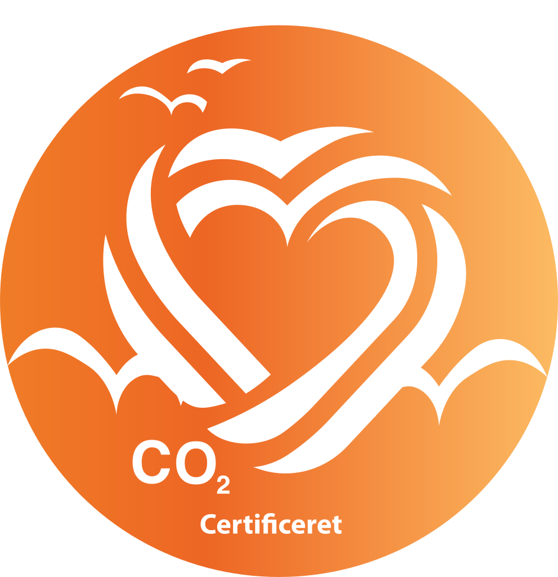
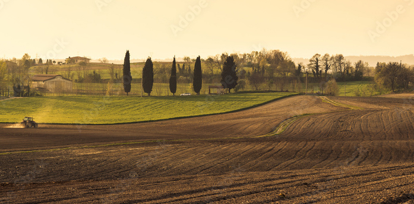
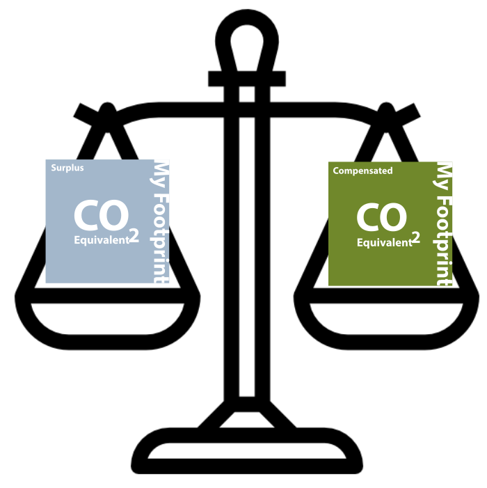
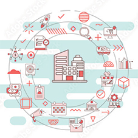
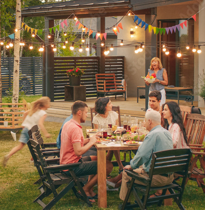
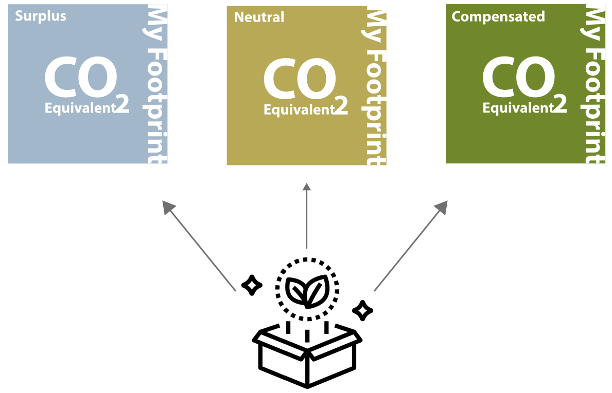
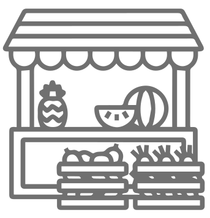
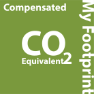
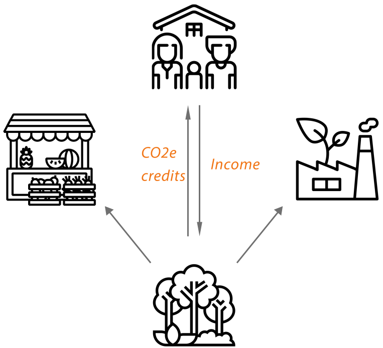
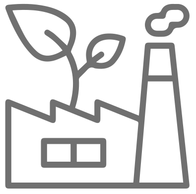

Welcome to

Your Footprint Ltd. is an innovative company that strives to make farming more sustainable, while maintaining profitability.
We have created a Carbon (CO2e) Farming tool,
compliant with the Green House Gas Protocol (GHGP) and exceeding government expectations on CO2 Modeling's.
In addition to our farming tool, we have a built-in CO2e marketplace for the trade of carbon credits farmed by the farmer on their own land. Our goal is to make it profitable for agriculture and landowners, to plant more forest and begin farming Carbon as a resource. Company's can also use our tool to calculate their SCOPE3 CO2e footprint, and then utilize our trading platform to acquire CO2e credits from us and become certified CO2e neutral.
In addition to our farming tool, we have a built-in CO2e marketplace for the trade of carbon credits farmed by the farmer on their own land. Our goal is to make it profitable for agriculture and landowners, to plant more forest and begin farming Carbon as a resource. Company's can also use our tool to calculate their SCOPE3 CO2e footprint, and then utilize our trading platform to acquire CO2e credits from us and become certified CO2e neutral.
For more information contact :- admin@yourfootprint.uk
Visit Our Farm For Real World Data
FARM BUSINESS OWNERS

This section is for agricultural business, and environmentalists who own a farm.
Looking for a way to reduce your CO2 footprint, reduce production costs and increase revenue.
Looking for a way to reduce your CO2 footprint, reduce production costs and increase revenue.
What do Farm Business owners
get using YourFootprint ?
An overview of their farms CO2e status

CO2e reduction through our CO2e credit trading platform
Sustainability accounting for the future
**This section requires a monthly subscription
**This section requires a monthly subscription
After taking YF Questionnaire, you can start using the benefits of the tool.
USERS


The Consumer/ End User
Tired of not knowing where to look?
Skeptical about How & Why this is or isn't CO2e Neutral/Compensated? Results you can trust.
Backed up by in-depth academic research
This puts accountability in your hands.
Skeptical about How & Why this is or isn't CO2e Neutral/Compensated? Results you can trust.
Backed up by in-depth academic research
This puts accountability in your hands.
What do the pubilc get using
YourFootprint
Consumers can get solid information about CO2e neutral products that they
buy from companies who are using YourFootprint. Plus fully transparent academic reporting on who, how and where the CO2e Credits are collected and calculated

**This section is FREE to use for The Consumer/End User.

Business Owners
Are you a business leader, looking for new and innovative ways to deal with your CO2?
Are you interested in your climate impact, as a small business.
Would you like to pass on the benefit of carbon reduction, to your customers?
Then this section is for you.
Are you interested in your climate impact, as a small business.
Would you like to pass on the benefit of carbon reduction, to your customers?
Then this section is for you.
What do Business Owners get using
YourFootprint ?
- Sustainability branding

- CO2e certification
- CO2e reduction via CO2e credit trading & compensating.
After completing the questionnaire, you will be redirected to the results page, where you can see an overview of your results,
plus a step-by-step guide on how to compensate CO2e emission and how to use the trading platform.

- A tool to market your CO2e neutral status.

- Sustainability accounting for the future.
- Overview of your farms CO2e status.
- Overview of your farms CO2e status.

FOREST OWNERS
Are you a serious industrial farmer, or do you own a substantial area of forestry.
Then this section is for you.
Using our system you can explore new opportunities and increase the value of large areas of your land.
Then this section is for you.
Using our system you can explore new opportunities and increase the value of large areas of your land.
What does a forest owner/industrial farmer get using
YourFootprint ?
How does this work ?
- Sign up to our system.
- Answer the questionnaire.
- Get your overview & CO2e credits and trade them in our system.
- Complete the questionnaire
- Get a step by step guide on using the trading system
START EARNING MONEY
- Sustainability accounting in line with international GHG regulations.

**YourFootprint gets a % each time you earn money from your forest / land via YourFootprint.
The amount depends on the size of your forest / land that is saved in our system.
The amount depends on the size of your forest / land that is saved in our system.
**0 - 100 Hectar = %5
**100 - 200 Hectar = %4
**200 - 300 Hectar = %3
**300 - 400 Hectar = %2
**500 - + Hectar = %1
**100 - 200 Hectar = %4
**200 - 300 Hectar = %3
**300 - 400 Hectar = %2
**500 - + Hectar = %1

BUSINESS
Are you a small / medium sized business, and a first mover in your sector?
We can provide you with a fully certified scope 3 life cycle analysis for your business!
Are you a national company under pressure from regulation and the financial sector to declare your CO2e activities including your upstream and downstream (SCOPE 3) in 2025/26?
Our solution provides piece-of-mind moving forward!
We can provide you with a fully certified scope 3 life cycle analysis for your business!
Are you a national company under pressure from regulation and the financial sector to declare your CO2e activities including your upstream and downstream (SCOPE 3) in 2025/26?
Our solution provides piece-of-mind moving forward!
What do company owners
users get using YourFootprint ?
- Sustainability branding.
- CO2e certification.
- CO2e reduction via credit trading.
- A tool to market their CO2e neutral status.
- Sustainability accounting for the future.
- CO2e certification.
- CO2e reduction via credit trading.
- A tool to market their CO2e neutral status.
- Sustainability accounting for the future.